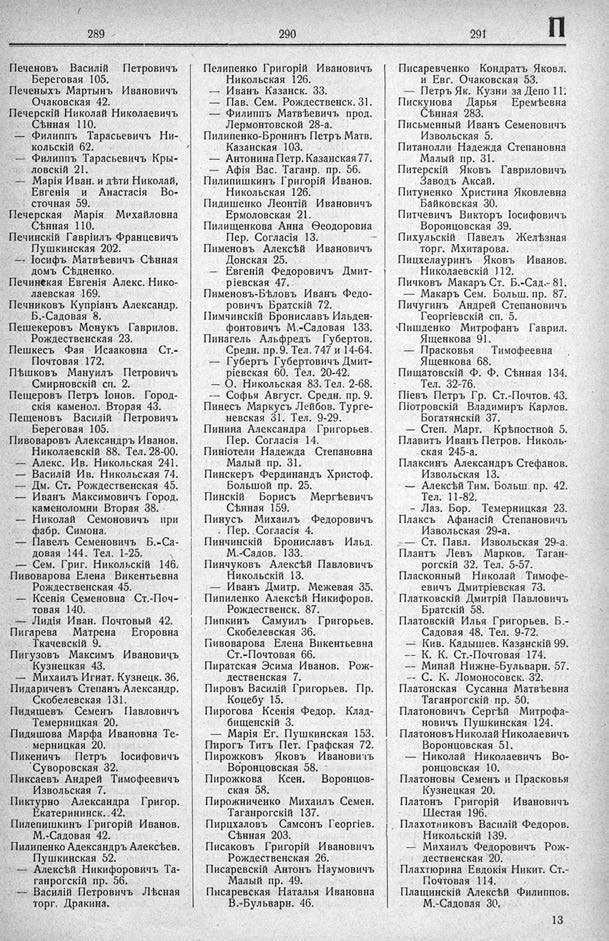

Лист источника 447
Скан

Распознанный текст
289
Печеновъ Василій Петровичъ
Береговая 105.
Печеныхъ Мартынъ Ивановичъ
Очаковская 42.
Печерскій Николай Николаевичъ
Сѣнная 110.
— Филиппъ Тарасьевичъ Ни-
кольскій 62.
— Филиппъ Тарасьевичъ Кры-
ловскій 21.
— Марія Иван. и дѣти Николай,
Евгенія и Анастасія Во-
сточная 59.
Печерская Марія Михайловна
Сѣнная 110.
Печинскій Гавріилъ Францевичъ
Пушкинская 202.
— Іосифъ Матвѣевичъ Сѣнная
домъ Сѣдненко.
Печинская Евгенія Алекс. Нико-
лаевская 169.
Печниковъ Купріанъ Александр.
Б.-Садовая 8.
Пешекеровъ Менукъ Гаврилов.
Рождественская 23.
Пешкесъ Фая Исааковна Ст.-
Почтовая 172.
Пѣшковъ Мануилъ Петровичъ
Смирновскій сп. 2.
Пещеровъ Петръ Іонов. Город-
скія каменол. Вторая 43.
Пещеновъ Василій Петровичъ
Береговая 105.
Пивоваровъ Александръ Иванов.
Николаевскій 88. Тел. 28-00.
— Алекс. Ив. Никольская 241.
— Василій Ив. Никольская 74.
— Дм. Ст. Рождественская 45.
— Иванъ Максимовичъ Город.
каменоломни Вторая 38.
— Николай Семоновичъ при
фабр. Симона.
— Павелъ Семеновичъ Б.-Са-
довая 144. Тел. 1-25.
— Сем. Григ. Никольскій 146.
Пивоварова Елена Викентьевна
Рождественская 45.
— Ксенія Семеновна Ст.-Поч-
товая 140.
— Лидія Иван. Почтовый 42.
Пигарева Матрена Егоровна
Ткачевскій 9.
Пигузовъ Максимъ Ивановичъ
Кузнецкая 43.
— Михаилъ Игнат. Кузнецк. 36.
Пидаричевъ Степанъ Александр.
Скобелевская 131.
Пидяшевъ Семенъ Павловичъ
Темерницкая 20.
Пидяшова Марфа Ивановна Те-
мерницкая 20.
Пикеничъ Петръ Іосифовичъ
Суворовская 32.
Пиксаевъ Андрей Тимофеевичъ
Извольская 7.
Пиктурно Александра Григор.
Екатерининск. 42.
Пилепишкинъ Григорій Иванов.
М.-Садовая 42.
Пилипенко Адександръ Алексѣев.
Пушкинская 52.
— Алексѣй Никифоровичъ Та-
ганрогскій пр. 56.
— Василій Петровичъ Лѣсная
торг. Дракина.
290
Пелипенко Григорій Ивановичъ
Никольская 126.
— Иванъ Казанск. 33.
— Пав. Сем. Рождественск. 31.
— Филиппъ Матвѣевичъ прод.
Лермонтовской 28-а.
Пилипенко-Бронинъ Петръ Матв.
Казанская 103.
— Антонина Петр. Казанская 77.
— Афія Вас. Таганр. пр. 56.
Пилипишкинъ Григорій Иванов.
Никольская 126.
Пидишенко Леонтій Ивановичъ
Ермоловская 21.
Пилищенкова Анна Ѳеодоровна
Пер. Согласія 13.
Пименовъ Алексѣй Ивановичъ
Донская 25.
— Евгеній Федоровичъ Дмит-
ріевская 47.
Пименовъ-Бѣловъ Иванъ Федо-
ровичъ Братскій 72.
Пимчинскій Брониславъ Ильден-
фонтовичъ М.-Садовая 133.
Пинагель Альфредъ Губертов.
Средн. пр. 9. Тел. 747 и 14-64.
— Губертъ Губертовичъ Дмит-
ріевская 60. Тел. 20-42.
— О. Никольская 83. Тел. 2-68.
— Софья Август. Средн. пр. 9.
Пинесъ Маркусъ Лейбов. Турге-
невская 31. Тел. 9-29.
Пинина Александра Григорьев.
Пер. Согласія 14.
Пиніотели Надежда Степановна
Малый пр. 31.
Пинскеръ Фердинандъ Христоф.
Большой пр. 25.
Пинскій Борисъ Мергѣевичъ
Сѣнная 159.
Пинусъ Михаилъ Федоровичъ
Пер. Согласія 4.
Пинчинскій Брониславъ Ильд.
М.-Садов. 133.
Пинчуковъ Алексѣй Павловичъ
Никольскій 13.
— Иванъ Дмитр. Межевая 35.
Пипиленко Алексѣй Никифоров.
Рождественск. 87.
Пипкинъ Самуилъ Григорьев.
Скобелевская 36.
Пивоварова Елена Викентьевна
Ст.-Почтовая 66.
Пиратская Эсима Иванов. Рож-
дественская 7.
Пировъ Василій Григорьев. Пр.
Коцебу 15.
Пирогова Ксенія Федор. Клад-
бищенскій 3.
— Марія Ег. Пушкинская 153.
Пирогъ Титъ Пет. Графская 72.
Пирожковъ Яковъ Ивановичъ
Воронцовская 58.
Пирожкова Ксен. Воронцов-
ская 58.
Пирожниченко Михаилъ Семен.
Таганрогскій 137.
Пирцхаловъ Самсонъ Георгіев.
Сѣнная 203.
Писаковъ Григорій Ивановичъ
Рождественская 26.
Писаревскій Антонъ Наумовичъ
Малый пр. 49.
Писаревская Наталья Ивановна
В.-Бульварн. 46.
291
П
Писаревченко Кондратъ Яковл.
и Евг. Очаковская 53.
— Петръ Як. Кузни за Депо 11.
Пискунова Дарья Еремѣевна
Сѣнная 283.
Письменный Иванъ Семеновичъ
Извольская 5.
Питанолли Надежда Степановна
Малый пр. 31.
Питерскій Яковъ Гавриловичъ
Заводъ Аксай.
Питуненко Христина Яковлевна
Байковская 30.
Питчевичъ Викторъ Іосифовичъ
Воронцовская 39.
Пихульскій Павелъ Желѣзная
торг. Мхитарова.
Пихцелауринъ Яковъ Иванов.
Николаевскій 112.
Пичковъ Макаръ Ст. Б.-Сад.- 81.
— Макаръ Сем. Больш. пр. 87.
Пичугинъ Андрей Степановичъ
Георгіевскій сп. 5.
Пишденко Митрофанъ Гаврил.
Ященкова 91.
— Прасковья Тимофеевна
Ященкова 68.
Пищатовскій Ф. Ф. Сѣнная 134.
Тел. 32-76.
Піевъ Петръ Гр. Ст.-Почтов. 43.
Піотровскій Владимиръ Карлов.
Богатянскій 37.
— Степ. Март. Крѣпостной 5.
Плавитъ Иванъ Петров. Николь-
ская 245-а.
Плаксинъ Александръ Стефанов.
Извольская 13.
— Алексѣй Тим. Больш. пр. 42.
Тел. 11-82.
- Лаз. Бор. Темерницкая 23.
Плаксъ Афанасій Степановичъ
Извольская 29-а.
— Ст. Павл. Извольская 29-а.
Плантъ Левъ Марков. Таган-
рогскій 32. Тел. 5-57.
Пласконный Николай Тимофе-
евичъ Дмитріевская 73.
Платковскій Дмитрій Павловичъ
Братскій 58.
Платовскій Илья Григорьев. Б.-
Садовая 48. Тел. 9-72.
— Кив. Кадышев. Казанскій 99.
— К. К. Ст.-Почтовая 174.
— Минай Нижне-Бульварн. 57.
— С. К. Ломоносовск. 32.
Платонская Сусанна Матвѣевна
Таганрогскій пр. 50.
Платоновичъ Сергѣй Митрофа-
новичъ Пушкинская 124.
Платоновъ Николай Николаевичъ
Воронцовская 51.
— Николай Николаевичъ Во-
ронцовская 10.
Платоновы Семенъ и Прасковья
Кузнецкая 20.
Платонъ Григорій Ивановичъ
Шестая 196.
Плахотниковъ Василій Федоров.
Никольскій 139.
— Михаилъ Федоровичъ Рож-
дественская 20.
Плахтюрина Евдокія Никит. Ст.-
Почтовая 114.
Плащинскій Алексѣй Филиппов.
М.-Садовая 30.
13